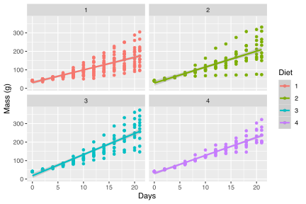
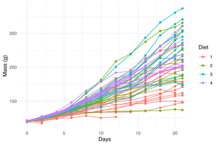
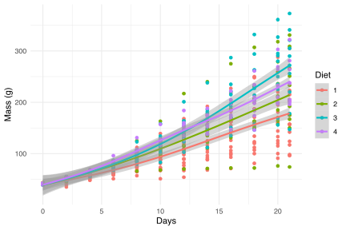
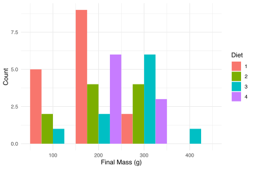
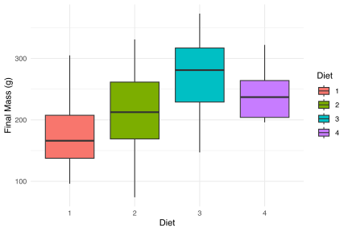
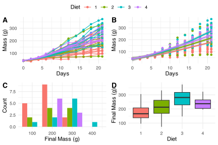

5. Faceting figures
Making multi-faceted figures with ggplot
![]()
“But let the mind beware, that though the flesh be bugged, the circumstances of existence are pretty glorious.”
— Kurt Vonnegut, Player Piano
“You miss 100% of the shots you don’t take.”
— Wayne Gretzky
So far we have only looked at single panel figures. But as you may have guessed by now, ggplot2 is capable of creating any sort of data visualisation that a human mind could conceive. This may seem like a grandiose assertion, but we’ll see if we can’t convince you of it by the end of this course. For now however, let’s just take our understanding of the usability of ggplot2 two steps further by first learning how to facet a single figure, and then stitch different types of figures together into a grid. In order to aid us in this process we will make use of an additional package, ggpubr. The purpose of this package is to provide a bevy of additional tools that researchers commonly make use of in order to produce publication quality figures. Note that library(ggpubr) will not work on your computer if you have not yet installed the package.
1 Faceting one figure
Faceting a single figure is built into ggplot2 from the ground up and will work with virtually anything that could be passed to the aes() function. Here we see how to create an individual facet for each Diet within the ChickWeight dataset.
# Load data
ChickWeight <- datasets::ChickWeight
# Create faceted figure
ggplot(data = ChickWeight, aes(x = Time, y = weight, colour = Diet)) +
geom_point() +
geom_smooth(method = "lm") + # Note the `+` sign here
facet_wrap(~Diet, ncol = 2) + # This is the line that creates the facets
labs(x = "Days", y = "Mass (g)")
2 New figure types
Before we can create a gridded figure of several smaller figures, we need to learn how to create a few new types of figures first. The code for these different types is shown below. Some of the figure types we will learn how to use now do not work well with the full ChickWeight dataset. Rather we will want only the weights from the final day of collection. To filter only these data we will need to use a bit of the ‘tidy’ code we saw on Day 1.
2.1 Line graph
line_1 <- ggplot(data = ChickWeight, aes(x = Time, y = weight, colour = Diet)) +
geom_point() +
geom_line(aes(group = Chick)) +
labs(x = "Days", y = "Mass (g)") +
theme_minimal()
line_1
2.2 Smooth (GAM) model
lm_1 <- ggplot(data = ChickWeight, aes(x = Time, y = weight, colour = Diet)) +
geom_point() +
geom_smooth(method = "gam") +
labs(x = "Days", y = "Mass (g)") +
theme_minimal()
lm_1
2.3 Histogram
# Note that we are using 'ChickLast', not 'ChickWeight'
histogram_1 <- ggplot(data = ChickLast, aes(x = weight)) +
geom_histogram(aes(fill = Diet), position = "dodge", binwidth = 100) +
labs(x = "Final Mass (g)", y = "Count") +
theme_minimal()
histogram_1
2.4 Boxplot
# Note that we are using 'ChickLast', not 'ChickWeight'
box_1 <- ggplot(data = ChickLast, aes(x = Diet, y = weight)) +
geom_boxplot(aes(fill = Diet)) +
labs(x = "Diet", y = "Final Mass (g)") +
theme_minimal()
box_1
3 Gridding figures
With these four different figures created we may now look at how to combine them. By visualising the data in different ways they are able to tell us different parts of the same story. What do we see from the figures below that we may not have seen when looking at each figure individually?
ggarrange(line_1, lm_1, histogram_1, box_1,
ncol = 2, nrow = 2, # Set number of rows and columns
labels = c("A", "B", "C", "D"), # Label each figure
common.legend = TRUE) # Create common legend
The above figure looks great, so let’s save a copy of it as a PDF to our computer. In order to do so we will need to assign our figure to an object and then use the ggsave() function on that object.
Create four new graphical data summaries that we have not seen before and create a faceted layout with the ggarrange() function as we have seen in the example provided in this chapter.
Make sure the above assignment is included within a Quarto file rendered to .html. Include some textual information to inform the reader of the intent of the plots and what patterns are visible.
Submit a R (Quarto) script wherein you provide answers to the Task questions by no later than 8:00 tomorrow.
Provide a neat and thoroughly annotated and labelled Rmarkdown file which outlines the graphs and all calculations (as necessary).
Please label the Rmarkdown and resulting HTML files as follows:
BCB744_<first_name>_<last_name>_Task_D.qmd, andBCB744_<first_name>_<last_name>_Task_D.html
(the < and > must be omitted as they are used in the example as field indicators only).
Failing to follow these instructions carefully, precisely, and thoroughly will cause you to lose marks, which could cause a significant drop in your score as formatting counts for 15% of the final mark (out of 100%).
Submit your Tasks on iKamva when ready.
4 Session info
installed.packages()[names(sessionInfo()$otherPkgs), "Version"]R> ggpubr lubridate forcats stringr dplyr purrr readr tidyr
R> "0.6.0" "1.9.2" "1.0.0" "1.5.0" "1.1.0" "1.0.1" "2.1.4" "1.3.0"
R> tibble ggplot2 tidyverse
R> "3.1.8" "3.4.1" "2.0.0"Reuse
Citation
@online{smit2021,
author = {Smit, AJ},
title = {5. {Faceting} Figures},
date = {2021-01-01},
url = {https://tangledbank.netlify.app/BCB744/intro_r/05-faceting.html},
langid = {en}
}